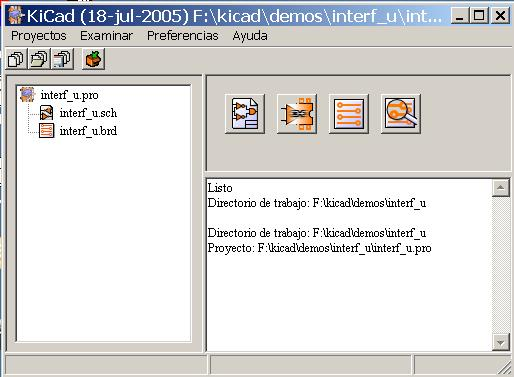

Kicad
Contenido:
- LINUX
- Windows 98/XP/2000
La aplicación kicad es un gestor de proyectos que facilita la utilización de los diferentes programas necesarios para la realización de los esquemas, circuitos impresos y para el control de los ficheros de fabricación.
Las distintas aplicaciones son:
Eeschema: editor de esquemas..
Pcbnew: editor de circuitos impresos.
Cvpcb: que permite la asociación fácil entre los componentes del esquema y los módulos físicos correspondientes del circuito impreso.
Gerbview: visor de ficheros Gerber.
Entrar como usuario root .
Copiar el fichero kicad.tgz en el directorio /usr/local. Se puede también utilizar el fichero kicad.zip (con el precio de un pequeño complemeto de instalación).
Ejecutar el comando tar zxvf kicad.tgz (o unzip kicad.zip). Se crearán el directorio kicad y sus subdirectorios y se copiarán los ficheros
Opcionalmente, modificar el fichero /etc/profile (u otro fichero de configuración estándar /usr/.profile, según la distribución LINUX utilizada) para añadir a la línea PATH el camino (path) de los ejecutables de EESchema (/usr/local/kicad/linux). No se debe utilizar el vínculo simbólico, ya que PCBNEW necesita conocer el camino de los ejecutables para encontrar allí algunos ficheros complementarios (configuración por defecto, ficheros de ayuda en línea...)
Eventualmente,
ajustar los permisos de acceso. Por defecto, los ficheros son de
lectura (y ejecución para los ejecutables) para todos y de
lectura/escritura para el propietario. El propietario es root.
Si
se ha utilizado el fichero kicad.zip, habrá que hacer
ejecutables los 5 ficheros siguientes: kicad, pcbnew, eeschema,
cvpcb, gerbview y el editor de texto wyoeditor en el
directorio kicad/linux (comando chmod +x kicad).
Eeschema utiliza las teclas de función F1 a F4 (zooms).
No deben por tanto ser reasignadas.
Bajo KDE, abrir el menú de configuración de KDE para suprimir las reasignaciones si las funciones de zoom se encuentran inactivas.
Se puede copiar /usr/local/linux/kicad.desktop en el escritorio.
Es preferible utilizar el gestor de proyectos kicad.exe antes que eeschema para aprovechar la gestión de proyectos. (el ejecutable kicad.exe se encuentra en disco:\Kicad\winexe\), donde disco es el disco (C:, D: ...) donde se ha instalado el directorio kicad.
Está más que aconsejado dar al directorio de trabajo y al proyecto el mismo nombre.
|
Ejemplo.pro |
|
|
Ejemplo.sch |
|
|
Ejemplo.brd |
|
|
ejemplo.net |
|
|
ejemplo.xxx |
|
|
exemple.cache.lib |
|


|
|
Abrir Eeschema |
|
|
Abrir Cvpcb. |
|
|
Abrir Pcbnew. |
|
|
Abrir Gerbview. |
|
|
|
|
|
Crear fichero de configuración de un nuevo proyecto. Si existe, se copia en el directorio de trabajo actual el fichero modelo kicad.pro en el directorio kicad/winexe o kicad/linux. |
|
|
Abrir proyecto ya existente. |
|
|
Guardar fichero de configuración actual. |
|
|
Crear un archivo .zip del proyecto (esquemas, bibliotecas, pcb, etc...). |
Instalación
e inicialización Pág